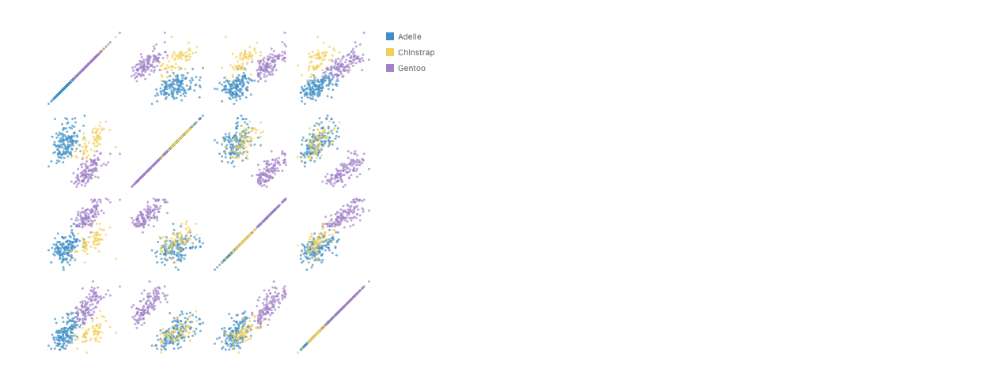

Sums, products, and ribbons
A step back from spellings. What control-flow structure do parallel sets, sankeys and trees actually have, which parts of it GoFish already has, and which candidate constructs fill the gaps?
Companion to the
stacked ribbons proposal. Precedent survey:
proposals/stacked-ribbons/research/composition-precedent.md.
Every picture is a real render from today's API unless marked otherwise;
the spellings here are hypothetical.
What a good answer must do
- Compose without effort. Nesting one construct in another needs no glue.
- Fit known control flow. Each construct should be a familiar idea: sequencing, a loop, a tuple, a case split, recursion, a join.
- Fit the pipeline and direct style split. The flow is roughly a list monad; direct style is roughly tuple composition. A new construct should land on one side for a reason.
-
Stay orthogonal to
.map(). Host-language map stays the generic tool, and a new construct must not be map in disguise.
The structure underneath
The types from the pipeline-types essay say what the two styles are. A mark
is Mark<T> = (d: T) => Node. A pipeline tier is
spread(by) := mark => d => Spread(map(groupBy(d, by), mark)). A combinator in mark position is
d => Spread([c1(d), c2(d), c3(d)]). So:
Pipeline tier = a sum
Its branches come from the data (groupBy), so the number of
children is known only at run time. Each branch sees a part of the rows.
In PL terms it is a monadic bind, or a case split over a data-dependent
set of tags. Names are never needed, because each tier only rebinds "the
current rows".
Direct-style combinator = a product
Its children are written in the spec, so the shape is static. Every
child sees the same scope. In PL terms it is applicative fanout, Arrows'
f &&& g &&& h. Children can differ
from one another, which a sum's branches cannot.
The two connect by distributivity,
rows × {class, sex, survived} ≅ rows + rows + rows. Fanning the
rows out to three axis children (a product) and tagging each row once per
axis, then splitting on the tag (a sum), describe the same picture. That is
exactly how the two proposals relate. Proposal 2 keeps the fanout in the
program. Proposal 1's unpivot moves it into the data as a tag
column (axis), and spread({ by: "axis" }) is the
case split on that tag.
This explains two earlier puzzles at once:
- Why proposal 1 needed an id. Its unpivot copied rows. A fanout in the program shares them, so "same row, same ribbon" is free there.
-
Why proposal 1 broke parallel coordinates. Its
valuecolumn lost what type it had. The honest type of a tagged view is a dependent pair,Σ f ∈ fields. T[f]: the type of the value depends on the tag. With the dependency kept, each axis has its own type, scale and title, and mm never meets g.
Control flow GoFish has, half has, and lacks
| Control-flow idea | Side | GoFish construct | Status | Needed by |
|---|---|---|---|---|
| sequencing | both | .flow(a, b), nesting |
have | everything |
| loop over data-derived groups | sum | by on any split |
have | categories, nodes, links |
| tuple of different parts (fanout) | product | combinator children sharing the scope | half | sankey node, FrankenSankey, school days |
| projection into a sub-list | product | chart(field("in")) |
lacks | sankey node, tree |
| loop over a fixed set of fields | either | host .map, or a typed view |
open | parallel sets and coordinates, SPLOM |
| case split with different branches | sum |
channel accessors like w: d => d.side ? 14 : 0
|
lacks | FrankenSankey in sum form |
| recursion | product | a host function that calls itself | half | sankey tree |
| join branches by identity | both | ribbon/line over ends |
half | every example |
"Half": combinator children don't inherit the scope today (a one-line fix);
recursion works but a self-referring mark has no spelling; ribbons join
today only through an explicit selectAll +
group tier, and run backwards when refs arrive out of order.
The shapes of the examples
| Example | Data shape | Natural side | Rejoin by |
|---|---|---|---|
| Ribbon chart (lakes × species) | list of rows | sum | a row-level key (species) |
| Parallel sets, parallel coordinates | rows × a fixed family of fields | either (distributivity) | row identity |
| SPLOM | rows × fields × fields | either | none |
| Energy sankey | nodes, each (in-links, out-links) | product per node | link identity |
| Sankey tree | recursive (box, children) | product + recursion | child identity |
| FrankenSankey, school days, Beatles | a tuple of different parts | product | row identity |
| Chord | matrix cells | sum | a pair key, (i, j) with (j, i) |
So no single side covers everything, and that's expected: lists and heterogeneous tuples are different data shapes. The one genuinely open row is the fixed family of fields, which sits on the distributivity line and could go either way. The candidates below are answers to that row. The rest of the table follows from the shapes.
Candidates for "the same thing, once per field"
Each candidate is written on parallel sets and parallel coordinates, with SPLOM where it differs. Scores use the four criteria above.
A. Product with host map
const axisColumn = (key) =>
chart().flow(spread({ by: key, dir: "y", spacing: 12 }), stack({ dir: "y" }))
.mark(rect({ w: 12, h: "count", fill: "class" }));
chart(titanic)
.mark(spread({ dir: "x", spacing: 120 }, ["class", "sex", "survived"].map(axisColumn)))
.layer(ribbon({ opacity: 0.6 })).map honestly and adds no construct that
duplicates it. Each child reads its own field, so per-field titles and
scales become per-child scales (needed anyway). Python's comprehension
produces explicit children that serialize.
B. Sum with a typed view
// parallel sets
chart(titanic)
.flow(
derive(unpivot(["class", "sex", "survived"], { name: "axis", value: "category" })),
spread({ by: "axis", dir: "x", spacing: 120 }),
spread({ by: "category", dir: "y", spacing: 12 }),
stack({ dir: "y" })
)
.mark(rect({ w: 12, h: "count", fill: "class" }))
.layer(ribbon({ opacity: 0.6 }))
// parallel coordinates: v's type depends on dim, so each axis gets its own scale and title
chart(penguins)
.flow(derive(unpivot(DIMS, { name: "dim", value: "v" })),
spread({ by: "dim", dir: "x", spacing: 120 }), scatter({ y: "v" }))
.mark(circle({ r: 1.5, fill: "Species" }))
.layer(line({ opacity: 0.3 }))
// SPLOM: two views cross
chart(penguins)
.flow(derive(unpivot(DIMS, { name: "row", value: "y" })),
derive(unpivot(DIMS, { name: "col", value: "x" })),
spread({ by: "row", dir: "y" }), spread({ by: "col", dir: "x" }),
scatter({ x: "x", y: "y" }))
.mark(circle({ r: 1.5, fill: "Species" }))
unpivot here is a view, not a copy. Each
output row is (original row, which field), so the rows are shared and a
row's three ends are still the same row. name and
value are ordinary fields, as you suggested;
value's type is looked up per name. No
id, no ribbon({ by }), no param.
.map already does
C. Named generator (a comprehension's for)
chart(titanic)
.flow(
over(["class", "sex", "survived"], { as: "axis" }), // rows broadcast; binds axis
spread({ dir: "x", spacing: 120 }),
spread({ by: field.of("axis"), dir: "y", spacing: 12 }), // the field the variable names
stack({ dir: "y" })
)
.mark(rect({ w: 12, h: "count", fill: "class" }))
.layer(ribbon({ opacity: 0.6 }))for f in fields in a
comprehension (LINQ, Haskell, Python)
.map already gives, plus field.of indirection
D. Keyed forEach in a builder body
spread({ dir: "x", spacing: 120 }, forEach(["class", "sex", "survived"], { key: (f) => f }, (f) =>
chart().flow(spread({ by: f, dir: "y" }), stack({ dir: "y" })).mark(rect({ h: "count" }))
)).layer(ribbon())
Where this points (revised). Criterion 4 means "don't build
a second map", and literally using .map is fine. With that
reading, A leads: it does well on all four criteria and
adds no construct at all. A family of fields is a static product, and the
host language already has the right tool for a static product generated from
a list. C and D now overlap .map. B is the runner-up: the same
picture from the sum side, worth having only as convenience for data that is
already long, or for a spec that has to stay inside one flow. What A needs
is the same plumbing B would need anyway: combinators passing their scope to
chart() children, a scale per child that reads a different
field, and the rejoin rule below. The sum/product reading still explains the
split:
- Sums live in the pipeline. Lists, and fixed families seen through a typed view, belong there.
- Products live in direct style. Heterogeneous tuples belong there.
- Distributivity is the bridge. It turns one into the other when a family's members are treated alike.
So the whole design reduces to the two styles GoFish already has, plus host
.map. Lists go in the pipeline. Tuples, whether written out or
generated with .map, go in direct style. Nothing new is needed
for iteration; the new work is projection, per-child scales, and the rejoin
rule.
The rejoin rule
One rule for every relational mark covers all the examples. A ribbon splits by keys that belong to the row, and treats keys that come from a view, plus the row itself, as its path.
-
Ribbon chart.
lakeandspeciesare row keys. The path tier islake, and the ribbon splits byspecies, which is today's #786 behavior unchanged. -
Parallel sets.
axisandcategorycome from the view, so they form the path. The last stack has noby, so it splits per row: one ribbon per row, threaded across the axes. That's the case the fused form fails on today, and the rule fixes it from the view's typing rather than a heuristic. -
Sankey.
sideandnodecome from the view over a link'ssourceandtarget, so each link's two ends join. - Products (sankey node, tree, FrankenSankey). Children share rows by reference, so ends from the same row join.
In JS, identity is the object; on the wire, a row index is added when data
enters chart(). That is what Vega-Lite users build by hand with
window. ribbon({ by }) stays as the override for
joining different rows, as in the chord's (i, j) with (j, i).
The rest of the table: products, projection, case, recursion
Products with projection: the sankey node
chart(nodes) // nest join gives each node in / out lists of shared link rows
.flow(spread({ by: "depth", dir: "x", spacing: 100 }),
spread({ by: "name", dir: "y", spacing: 10 }))
.mark(spread({ dir: "x", spacing: 0 }, [
chart(field("in")).flow(stack({ dir: "y" })).mark(rect({ w: 6, h: "value" })),
chart(field("out")).flow(stack({ dir: "y" })).mark(rect({ w: 6, h: "value" })),
]))
.layer(ribbon({ opacity: 0.4 }))
The node is a product (two different parts); each part is a sum (a list
of links). chart(field("in")) is projection, Arrows'
arr(.in) >>>, D3's
data(d => d.children). Sum form also works (round 1's
unpivot of source/target, now a view), but
there the end order on each side needs a key; here each side's order is
just its own flow.

Products with recursion: the sankey tree
const node = (gap, child) => spread({ dir: "x", spacing: 64, alignment: "middle" }, [
rect({ w: 40, h: "count", fill: "class" }),
chart(field("children")).flow(spread({ dir: "y", spacing: gap })).mark(child),
]);
chart(tree).flow(spread({ by: "class", dir: "y", spacing: 8 }))
.mark(node(4, node(2, rect({ w: 40, h: "count", fill: "class" }))))
.layer(ribbon({ opacity: 0.6 }))A node is a product of a box and a sum of children. Here recursion is host abstraction, which is fine: it's static structure. Still open: each parent-to-child ribbon needs its own slice of the parent's edge. That's a question about ends, not control flow.

Case split: FrankenSankey in each form
spread({ dir: "x", spacing: 150 }, [
spread({ dir: "x", spacing: 0 }, [
chart(years).flow(spread({ by: "year", dir: "x", spacing: 22 }), stack({ by: "decision", dir: "y" }))
.mark(ribbon({ h: "value", fill: "decision" })),
chart(links).flow(stack({ by: "decision", dir: "y" }), stack({ by: "country", dir: "y" }))
.mark(rect({ w: 14, h: "value", fill: "decision" })),
]),
chart(links).flow(spread({ by: "country", dir: "y", spacing: 6 }), stack({ by: "decision", dir: "y" }))
.mark(rect({ w: 14, h: "value", fill: "decision" })),
]).layer(ribbon({ fill: "decision", opacity: 0.55 }))chart(parts) // rows tagged part: "area" | "bar" | "country"
.flow(match("part", {
area: [spread({ by: "year", dir: "x" }), stack({ by: "decision", dir: "y" })],
bar: [stack({ by: "decision", dir: "y" }), stack({ by: "country", dir: "y" })],
country: [spread({ by: "country", dir: "y" }), stack({ by: "decision", dir: "y" })],
}))
Heterogeneous branches are a product's job. Done as a sum, they need
match (ArrowChoice's |||, a
switch), which GoFish lacks. Round 1's spec smuggled it
into channel accessors. The comparison argues for keeping heterogeneous
structure in direct style, and adding match only if a real
example needs a sum with different branches.

Pictures for candidate B
Rendered from today's equivalents. B's unpivot is emulated by copying rows and grouping ribbons by row; per-axis scales are emulated by normalized columns where marked.



Open questions
- Does the sum/product reading match your intuition for the pipeline vs direct-style split: data-dependent branches in the pipeline, static tuples in direct style?
-
Candidate A: are products generated with host
.map(a Python comprehension) the answer for fixed families of fields, with a typedunpivotview (B) kept only as optional convenience, or dropped? -
Per-child scales: should a direct-style child chart that reads a
different field get its own scale and axis title by default, with a way
to ask for a shared one? (Under B this would instead be dependent typing
of
value.) -
Rejoin: one rule for relational marks, splitting by row-level keys
while view-level keys and row identity form the path, with
ribbon({ by })as the override? -
Projection:
chart(field("in"))as the way a product's part reads a sub-list of the parent row? -
Case split: leave
matchout until a real example needs a sum with different branches? - Is the tree's per-child edge slice a separate design question about ends, outside this one?